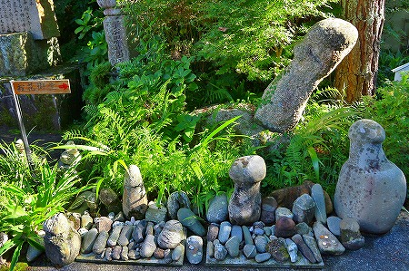

お花大権現/徳島県
お花大権現は一部マニアの間では有名な寺である。
寺の名は林下寺。
お花、とは江戸時代に実在した女性だという。
とある藩の側室であったお花さんは城主の寵愛を一身に受けたものの、同僚の恨みを買って殺されてしまった。
それを不憫に思った城主が城内に祀ったのがそもそもの始まりとか。
その後現在の地に移され、悲劇のヒロインが転じて性のカミサマとして祀られてきたらしい。
本堂までの道すがらにもこのような男根型の石が奉納されている。

さらに真新しい本堂の内部は一種異様な雰囲気に。
堂内のあちこちに林立する珍子！
大事なモノだというのは判りますけど、毛糸の帽子を被せるのは如何なものかと…。
左右の棚にもびっしりと木彫りの陽根が並んでいる。
唖然としていると住職さんと思しき方が奉納物殿なる建物に案内してくれた。
拝観料を払い昭和の香りがプンプンな感じの建物の中に入ると…
おふっ！
先ほどの本堂よりもさらに大量のチンチンがお出迎え！
これは民俗資料としても超一級品の品揃えなのではなかろうか。
江ノ島を彷彿とさせるちょいとエロい弁天サマ。
太ももの上にはビッシリお賽銭が並んでいました。
あとは男根男根また男根。
もうクラクラしてきます。
それにしても様々な形状やサイズがあるものだ。
素朴な男根からチョットその形はありえないだろ的なモノ、アバンギャルド過ぎる男根、漆塗り、畸形、イボイボ…
案内してくださった住職さんも男根信仰にかなり理解を示してらっしゃる様子。
コレだけの建物を建てるお寺だけに男根信仰を全面的にバックアップしている感じが実に素晴らしい。
やはりここまで珍子が奉納されるにはお寺側の積極的な理解がなければ不可能だろう。
デカイ珍子に紐がぶら下がっている。
引っ張ってみると…
ぬううんとこっちを向いてくれました。ありがたや、ありがたや〜。
左右にも無数の木製男根が並んでおり男根博物館の様相を呈している。
個性的な男根が数多く奉納されていた。
中にはかなり大型のものも。
そんな中で一番強烈だったのがこちら。
根元は空洞になっており、お花さんの穴禅定と呼ばれている。
ここを潜ると無病息災だとか。
面白がって写真を撮っていると後から家族連れがやってきた。
一通り参拝した後、お母さんが小学校高学年の娘にしきりにこの穴禅定を潜るように促す。
ここがどういう施設でコレが何を意味するのかは薄々気付いている様子の娘、半笑いで拒否るといきなりママ逆切れ。
「くぐれっつったらくぐるんだよお！」
どうしたママ、何かあったのか？
ママのただならぬ雰囲気からは何か深刻な状況があるのかもしれない。
チョット同室するのもかわいそうなのでそそくさと奉納物殿を後にした。
果たしてあの子は珍子潜りをしたのだろうか？
そもそもあそこは未成年が入ってもイイのだろうか？
謎は尽きないのであった。
2012.08.
珍寺大道場 HOME